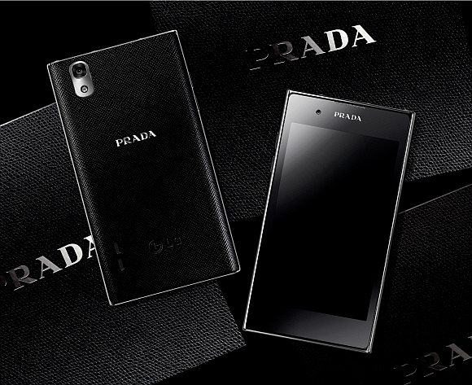
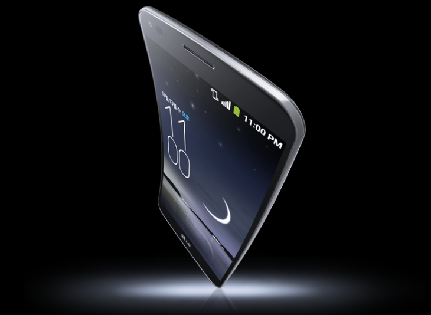
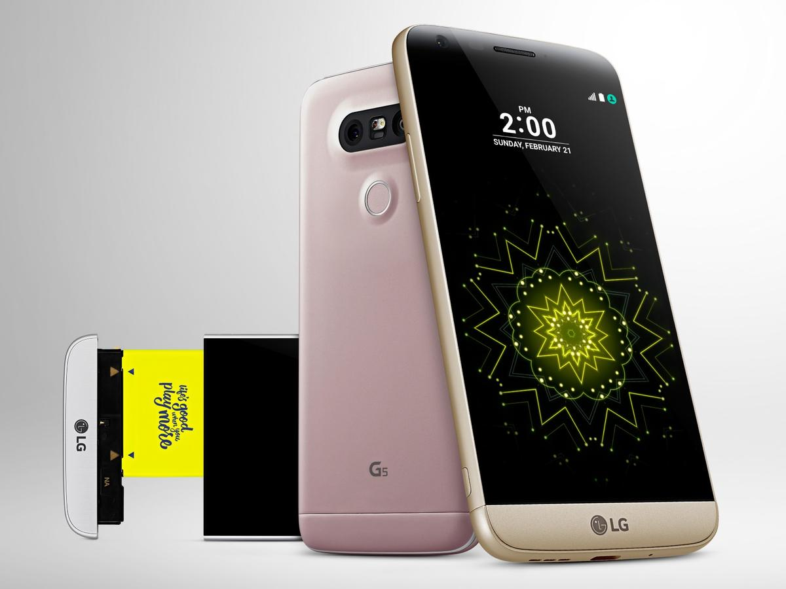
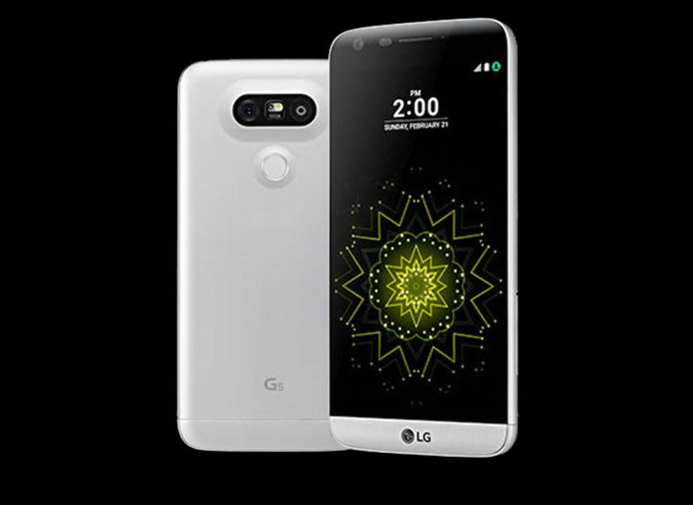
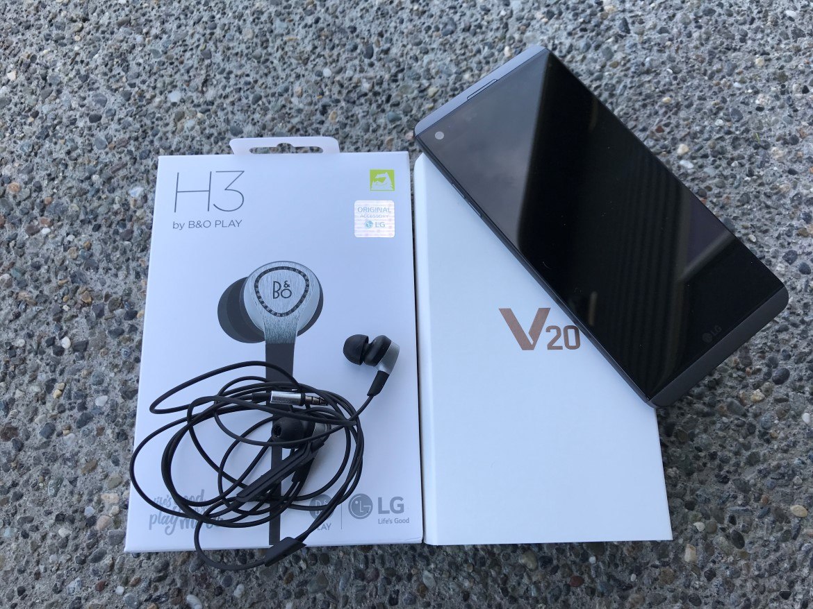
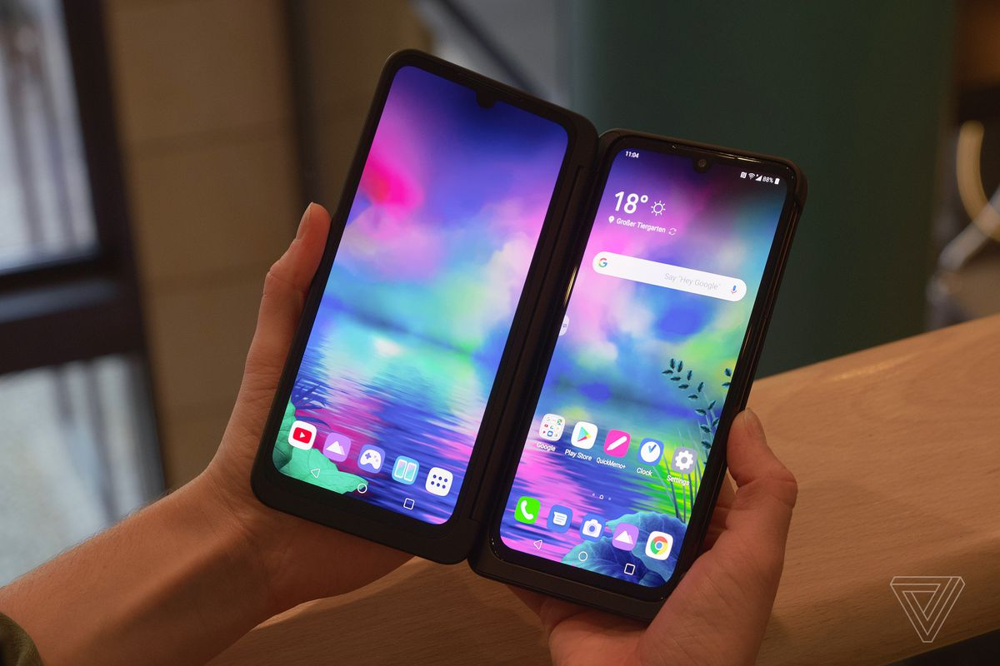
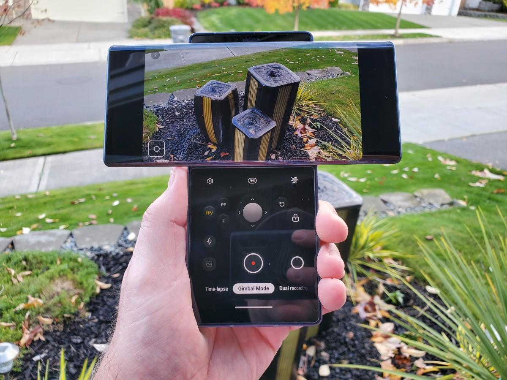

1. Capacitive touchscreen display
When people think of capacitive touchscreen displays on phones, the default belief is that Apple was the
first to launch with this technology in the original iPhone.
However, LG beat Apple to the punch with the LG Prada that was launched in 2006.
The LG Prada had a 3-inch capacitive display with a 400x240 pixel resolution. It sported a pretty decent camera,
but was priced at $849 in the US so it wasn't that popular.

2. Flexible OLED display
LG released the G Flex with a curved flexible OLED display. It was curved along its length so that it would fit comfortably
along your face as you held it up for phone calls. It was a rather large phablet phone with a six-inch display, which was very
large for this time period.
Competition at the time included the Samsung Galaxy Note 3, which had a smaller form factor and the great S Pen experience.
Today we see foldable phones with flexible displays and can thank LG for leading the way.

3. Modular smartphone
The idea of a modular smartphone where you simply slide off various accessories for enhanced functionality sounded good at first when
LG launched the LG G5. However, modules never showed up so you were limited to just a removable battery, digital-to-analog converter,
and a camera grip. The "LG Friends" never showed up to the party and the G5 didn't do well in the market.

4. Ultra-wide camera
While the LG G5 modularity wasn't embraced, the LG G5 provided an ultra-wide rear camera on the back. Ultra-wide cameras are now a default
on mid and upper level smartphones that have more than one rear camera. LG set this bar and this innovation may be the one that lasts the longest
after LG departs the smartphone sector.
LG also had a front-facing ultra-wide camera on the LG V10, which was one of the first times we saw two cameras on the front of a smartphone.

5. Quad DAC
LG's V-series was focused on content creators and audiophiles and in 2016 it launched the LG V20 with an integrated quad-DAC for high quality audio playback.
It may not have been appreciated by everyone, but audiophiles loved the sound produced from an LG V20.
LG continued providing the standard 3.5mm headphone jack almost up until the end, which was one to two years longer than most other manufacturers.

6. Dual screen Android smartphone
While others were looking at foldable phones, LG offered a simple solution with its LG Dual Screen cover that offered a big duplicate display for a much more
affordable price. It first launched the LG G8X with this option and then we saw the V50 and V60. The LG Velvet also supported the Dual Screen cover.
The beauty of this solution was that you could use the dual-display when needed or pop out the phone and use it as a standard phone with ease.
The dual display was well supported and the LG V60 offered the ultimate experience with extensive support for stylus use. I will continue to use the LG V60 for
years because it truly is one of the best smartphones today.

7. Swivel dual display
While it was fun to experience the LG Wing with its unique swivel T display, I had trouble finding a practical use for this design other than for shooting video
with the gimbal simulation. The lower small display was not very useful so the phone had limited appeal.